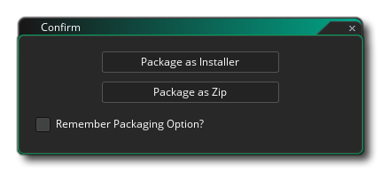

Das Kompilieren Ihres Spiels kann zwei Dinge bedeuten: es zum Testen kompilieren oder es kompilieren, um ein Asset-Paket für eine bestimmte Zielplattform zu erstellen. Sie können Ihr Spiel testen, indem Sie einfach die Wiedergabetaste drücken an der Spitze der IDE, die das Spiel zum Testen mit dem angegebenen Ziel startet. Sie können das Spiel auch im Debug-Modus ausführen, indem Sie die Schaltfläche Debuggen verwenden . Dadurch wird das Spiel ausgeführt, aber auch das Debug-Fenster geöffnet, in dem Sie überwachen können, wie Ihr Spiel läuft, und alle Probleme beheben ( weitere Informationen finden Sie im Abschnitt Debuggen ).
Standardmäßig wird GameMaker Studio 2 mit der integrierten VM (virtuelle Maschine) ausgeführt und debuggt. Dies entspricht mehr oder weniger der Ausführung auf dem verwendeten Desktop-Betriebssystem. GameMaker Studio 2 ist jedoch eine plattformübergreifende Engine und Sie können Asset-Pakete Ihrer Projekte auf einer Reihe verschiedener Zielplattformen testen, debuggen und kompilieren (die genauen verfügbaren Plattformen hängen von den Details Ihrer Lizenz ab). Um die aktuelle Zielplattform zu ändern, klicken Sie auf die Schaltfläche Ziele  Öffnen Sie das Targets-Fenster, das ungefähr so aussieht (genaue Details variieren je nach Lizenztyp):
Öffnen Sie das Targets-Fenster, das ungefähr so aussieht (genaue Details variieren je nach Lizenztyp): 
Oben, neben der Schaltfläche "Ziele", haben Sie die aktuellen Einstellungen, die Ihnen die Plattform und die tatsächlich verwendeten Einstellungen mitteilen. Anschließend wird der Rest des Fensters mit den Details und Optionen für alle verfügbaren Ziele angezeigt, die Sie verwenden können Wählen Sie, um stattdessen zu verwenden. Jeder Abschnitt dieses Fensters wird nachfolgend erläutert:
Die erste Spalte des Target Managers ist den Remote Workers zugeordnet, die Ihnen zur Verfügung stehen. Zu Beginn haben Sie nur einen einzigen "lokalen" Computer, der auf diesem Computer installiert ist, auf dem GameMaker Studio 2 installiert ist. Sie können aber auch einen Remote Worker konfigurieren. Wenn ein Remote - Worker konfiguriert wurde, werden Sie dann in der Lage sein, es hier aus der Liste zu wählen, und hat es Ihre Projekte zu bauen, anstatt die Host - Maschine zu verwenden, in denen GameMaker Studio 2 installiert ist.
Weitere Informationen zum Einrichten und Verwenden von Remote Workers finden Sie im folgenden Abschnitt:
In diesem Abschnitt werden alle verfügbaren Zielplattformen aufgelistet. Der Inhalt dieser Liste hängt von der Lizenz ab, die Sie haben, hat aber immer mindestens das Ziel "Test". Um ein Ziel auszuwählen, klicken Sie einfach auf
darauf. Dies aktualisiert dann die restlichen Optionenfenster, um abhängig von der ausgewählten Plattform verschiedene Details anzuzeigen.
Jede Zielplattform kann ein oder mehrere Ausgabeformate haben. Die wichtigsten sind:
- VM: Das VM-Ziel (Virtual Machine) verwendet für jede Plattform einen allgemeinen Runner und interpretiert den Code für Ihr Spiel. Im Allgemeinen wird diese Option aufgrund ihrer schnelleren Build-Zeiten für Testzwecke verwendet, bietet jedoch nicht den gleichen Leistungsschub, den die Verwendung der YYC-Option (falls verfügbar) bietet. Sie können damit kleinere Spiele oder Spiele kompilieren, bei denen die Leistung jedoch kein Problem darstellt.
- YYC: Der YYC ( YoYo Compiler) übernimmt die normale Ausgabe von GameMaker Studio 2 und kompiliert sie in nativen Code für die Zielplattform, "entlädt" unnötige Funktionen und führt eine Vielzahl anderer Optimierungstechniken durch, um eine kleinere ausführbare Datei zu erstellen. Dies kann die Spieleleistung um mindestens zwei oder drei Mal erhöhen, besonders bei Spielen mit hohem Logikanteil, ideal für größere oder CPU-intensive Spiele. Die Kompilierungszeiten können länger dauern und Sie sollten den Compiler-Cache immer löschen, bevor Sie ein vollständiges Asset-Paket für eine Zielplattform erstellen. Beachten Sie, dass für das YYC-Ziel möglicherweise zusätzliche Tools für die ausgewählte Plattform erforderlich sind. Andernfalls funktioniert es nicht. Weitere Informationen hierzu finden Sie in der YoYo Games Hilfe sowie auf den einzelnen Zieleinstellungen in diesem Handbuch.
- JavaScript: Das JavaScript-Ziel ist nur für einige Ziele wie das HTML5-Ziel verfügbar und legt das zu kompilierende Spiel auf reines JavaScript fest.
Bestimmte Plattformen (wie iOS oder Android ) ermöglichen es Ihnen, ein oder mehrere Geräte mit GameMaker Studio 2 zu verknüpfen, damit Spiele diese selektiv kompilieren können. Anfangs ist die Geräteliste leer und Sie müssen klicken
um den Geräte-Editor zu öffnen:
Hier können Sie neue Geräte hinzufügen sowie den GameMaker Studio 2- Test für eine Verbindung zu allen angeschlossenen Geräten durchführen lassen. Der genaue Inhalt dieses Fensters hängt von den Plattformspezifikationen ab (genaue Details zu jeder Plattform finden Sie im Abschnitt zum Geräte-Manager ). Sobald ein Gerät gefunden oder hinzugefügt wurde, wird es in diesem Fenster angezeigt, wie in diesem Beispielbild für Android:
Die genaue Vorgehensweise und die Voraussetzungen zum Einrichten von Geräten und zur Fehlerbehebung finden Sie im entsprechenden Abschnitt der GameMaker Studio 2 Knowledge Base.
Wie im Abschnitt " Konfigurationen" beschrieben, können Sie bestimmte Details speichern, um Ihr Spiel als Configs zu kompilieren. In diesem Bereich des Fensters "Ziele" können Sie GameMaker Studio 2, dass GameMaker Studio 2 automatisch eine bestimmte Konfiguration für eine bestimmte Zielplattform auswählt.

Erstellen eines endgültigen ausführbaren Pakets
Um Ihr Spielprojekt auf einer beliebigen Zielplattform zu kompilieren, müssen Sie die richtigen Build-Tools (siehe hier ) eingerichtet und die entsprechenden Plattform-Einstellungen ausgefüllt haben. Sobald Sie das getan haben, können Sie einfach auf die Schaltfläche Create Executable klicken  In der IDE starten Sie den Compiler-Build oder wählen Create Executable aus dem Build-Menü. Beide Optionen öffnen ein Datei-Explorer-Fenster, in dem Sie den endgültigen Namen angeben können, den Sie für Ihr Spielpaket verwenden möchten, bevor Sie auf Speichern klicken, um den Kompilierungs- und Erstellungsvorgang zu starten. Sobald Sie dies getan haben, werden die notwendigen Dateien erzeugt, damit Sie sie nach Wunsch verteilen können.
In der IDE starten Sie den Compiler-Build oder wählen Create Executable aus dem Build-Menü. Beide Optionen öffnen ein Datei-Explorer-Fenster, in dem Sie den endgültigen Namen angeben können, den Sie für Ihr Spielpaket verwenden möchten, bevor Sie auf Speichern klicken, um den Kompilierungs- und Erstellungsvorgang zu starten. Sobald Sie dies getan haben, werden die notwendigen Dateien erzeugt, damit Sie sie nach Wunsch verteilen können.
Jede Zieloption speichert das folgende Format für eine Plattform:
- Windows - Beim Kompilieren für das allgemeine Windows-Betriebssystem werden Sie zuerst aufgefordert, zwischen dem Erstellen eines Installer- oder Zip- Pakets zu wählen, wobei das Installationsprogramm eine einzelne ausführbare Datei ist, die Ihr Spiel installiert, und die Zip-Datei eine komprimierte Datei im Zip-Format ist alle Ihre Spieldateien sind darin gespeichert (die Dateien müssen extrahiert werden, damit das Spiel ausgeführt werden kann).  Wenn Sie das Kästchen Remember Packaging Option markieren, wird GameMaker Studio 2 die Auswahl für alle zukünftigen Kompilierungen speichern (dies kann in den Windows-Einstellungen zurückgesetzt oder geändert werden). Weitere YoYo Games finden Sie in der YoYo Games Hilfe
- Ubuntu (Linux) - Ubuntu (Linux) -Apps können als kompiliert werden *.zip Dateien. Weitere YoYo Games finden Sie in der YoYo Games Hilfe.
- HTML5 - Wenn Sie HTML5 erstellt haben, dann ein index.html Datei (dies ist der Standardname, aber Sie können auch Ihren eigenen Namen in den Plattform-Einstellungen angeben) zusammen mit einem Ordner, der Ihre Spieledateien enthält, wird erstellt und am angegebenen Speicherort gespeichert. Damit Ihr Spiel funktioniert, müssen Sie beide auf einen Server hochladen. Das index.html kann auch angepasst werden, um Ihr Spiel mit einer anderen Hintergrundfarbe oder an einer anderen Position usw. zu zeigen... aber dafür ist HTML-Kenntnisse erforderlich, und Sie können beim Erstellen des Pakets auch Ihre eigene benutzerdefinierte Indexdatei angeben (siehe die HTML5 Spieloptionen ). Weitere YoYo Games finden Sie in der YoYo Games Hilfe.
- Android - Für Android Geräte, eine einzige *.apk Es wird eine Datei erstellt, die direkt auf jedem Android Gerät verwendet oder in die Google Play- oder Amazon Stores (oder jede andere Website, die Android Apps akzeptiert) hochgeladen werden kann. Weitere YoYo Games finden Sie in der YoYo Games Hilfe.
- iOS - Kompilieren nach iOS erstellt ein xarchive Datei, die dann in Xtools verwendet wird, um das endgültige iOS-Paket zu erstellen. Beachten Sie, dass zur Kompilierung für iOS ein Apple Mac-Computer mit OSX oder höher sowie die entsprechenden Zertifikate und Berechtigungen erforderlich sind. Weitere YoYo Games finden Sie in der YoYo Games Hilfe.
- Mac OS - Das Mac OS-Ziel erstellt entweder ein *.app Datei oder a *.pkg Datei, abhängig davon, ob Sie sie später in den Mac App Store hochladen möchten oder nicht. Wie bei iOS benötigen Sie einen Apple Mac-Computer mit OSX oder höher sowie die entsprechenden Zertifikate und Berechtigungen. Weitere YoYo Games finden Sie in der YoYo Games Hilfe.
- Windows UWP - Für Windows UWP GameMaker Studio 2 ein *.appx Paket, das dann in den Windows Store hochgeladen werden kann. Wenn Sie auf die Schaltfläche Create Executable klicken, werden Sie aufgefordert, GameMaker Studio 2 mitzuteilen, welche Art von Paket Sie erstellen möchten (entweder für ARM-, x64- oder x86-Architekturen), und Sie sollten das auswählen, was auf die Geräte Ihres Spiels zielt unterstützt werden bei:
 Wenn Sie das Kontrollkästchen Paket für Store-Upload markieren, wird das endgültige Paket erstellt .appxupload Datei, die von Microsoft angegeben wird, sollte für das Senden von Apps an ihren Store verwendet werden, wie in diesem Artikel hier beschrieben. Beachten Sie auch, dass Sie die Standard-Verpackungsoption aus den UWP-Einstellungen festlegen können, damit sich GameMaker Studio 2 die Auswahl für alle zukünftigen Kompilierungen merkt (dh dieses Optionsfenster wird nicht angezeigt). Weitere Informationen zum Einrichten und Kompilieren der UWP-Plattform finden Sie in der YoYo Games Hilfe.
Wenn Sie das Kontrollkästchen Paket für Store-Upload markieren, wird das endgültige Paket erstellt .appxupload Datei, die von Microsoft angegeben wird, sollte für das Senden von Apps an ihren Store verwendet werden, wie in diesem Artikel hier beschrieben. Beachten Sie auch, dass Sie die Standard-Verpackungsoption aus den UWP-Einstellungen festlegen können, damit sich GameMaker Studio 2 die Auswahl für alle zukünftigen Kompilierungen merkt (dh dieses Optionsfenster wird nicht angezeigt). Weitere Informationen zum Einrichten und Kompilieren der UWP-Plattform finden Sie in der YoYo Games Hilfe.
Sobald Sie Ihr ausführbares Asset-Paket erstellt haben, können Sie die Datei an andere Personen weitergeben oder auf Ihrer Website zum Download bereitstellen oder diese Dateien auf die verschiedenen Hosting-Services für die individuelle Verteilung oder sogar auf Online-Stores (wie Google Play, iTunes oder den MS Store) für den allgemeinen Vertrieb und Einzelhandel.
Beachten Sie, dass Sie die mit GameMaker Studio 2 Spiele beliebig verteilen können, einschließlich des Verkaufs. Dies setzt natürlich voraus, dass die Sprites, Bilder und Sounds, mit denen du sie erstellt hast, auch verteilt oder verkauft werden können und dass du die gesetzlichen Rechte an allen Assets hast. Außerdem wird vorausgesetzt, dass das Spiel dem EULA von YoYo Games entspricht GameMaker Studio 2. Sie finden die Lizenzvereinbarung im Installationsordner von GameMaker Studio 2, normalerweise " C:\Program Files\GameMaker Studio 2\Licence.txt ".